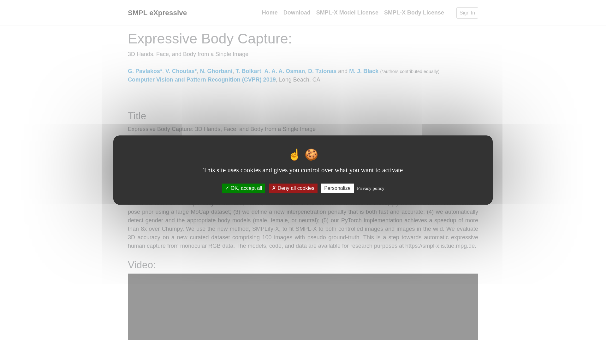

Max Planck Institute 開發的統一 3D 人體模型，涵蓋身體+手部+臉部表情，學術界標準的人體表示格式。
| 開發者 | Max Planck Institute for Intelligent Systems |
|---|---|
| 類型 | 人體模型格式 / 學術標準 |
| 價格 | 免費學術使用（需註冊）；商用需洽談 |
| 官網 | smpl-x.is.tue.mpg.de |
SMPL-X 參數（pose/shape/expression），需透過轉換工具（如 smplx2bvh）轉為 BVH 骨架動畫。
| 優點 | 缺點 |
|---|---|
| 學術標準，工具鏈豐富 | 商業授權需洽談 |
| 身體+手+臉完整 | 輸出需額外轉換 |
| 參數化便於編輯 | 學術導向非產品化 |
| 持續有新研究發展 | 模型精度受訓練資料限制 |
SMPL-X 是很多 AI mocap 工具的底層格式。整合路徑：SMPL-X 參數 → 關節旋轉 → BVH。已有開源工具支援轉換。理解 SMPL-X 有助於整合各種研究工具輸出。
基礎設施層的人體表示標準——掌握 SMPL-X 轉換是整合各種 AI 動作研究工具的關鍵。